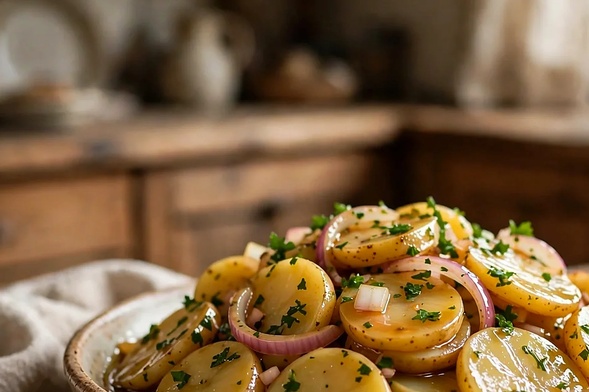

Schwäbischer Kartoffelsalat – warm, saftig und ohne Mayo
Im Süden kommt der Kartoffelsalat ganz ohne Mayo aus – und genau das macht ihn so gut. Die noch warmen Kartoffelscheiben trinken sich an der würzigen Brühe richtig satt. Bei uns gibt es ihn zu Schnitzel, Würstchen oder einfach so, am liebsten lauwarm.

Inhaltsverzeichnis
Zutaten
Zubereitung
- Die Kartoffeln waschen und in Salzwasser 20–25 Minuten gar kochen. Abgießen, kurz ausdampfen lassen und noch warm pellen.
- Die warmen Kartoffeln in etwa 3–4 mm dicke Scheiben schneiden und in eine große Schüssel geben. Die Zwiebelwürfel darüberstreuen.
- Die heiße Brühe mit Essig, Senf, Salz, Pfeffer und Zucker verrühren. Die Marinade über die warmen Kartoffeln gießen und vorsichtig vermengen.
- Den Salat mindestens 30 Minuten ziehen lassen und dabei ein- bis zweimal behutsam wenden, damit die Scheiben die Brühe gleichmäßig aufnehmen.
- Erst jetzt das Öl und die Kräuter unterheben und noch einmal mit Salz, Pfeffer und Essig abschmecken.
- Am besten lauwarm servieren – so schmeckt der schwäbische Kartoffelsalat am aromatischsten.

Tipp
Die Marinade muss unbedingt über die warmen Kartoffeln kommen – nur so saugen sie sich voll und der Salat wird saftig statt trocken. Wird er zu trocken, einfach noch einen Schuss heiße Brühe unterrühren.
📌 Mehr Rezept-Ideen findest du auf unserem Pinterest-Profil:
Lecker Rezepte auf Pinterest
Lecker Rezepte auf Pinterest